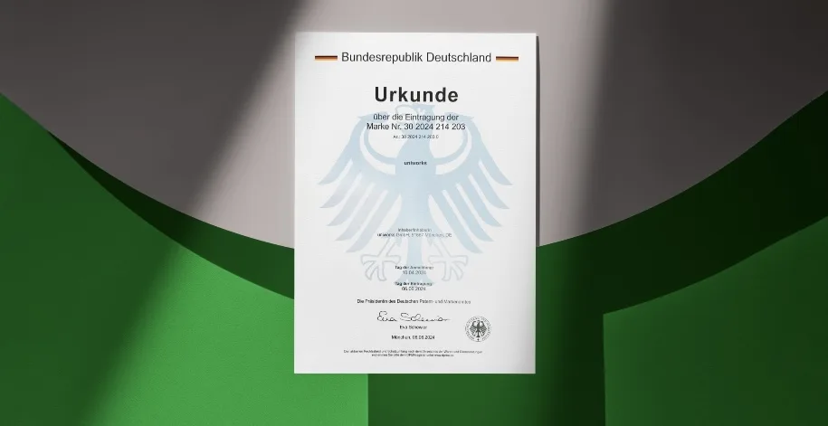

uniworks – Eine eingetragene Marke

München – Die uniworks GmbH freut sich zu verkünden, dass „uniworks“ nun offiziell als Marke eingetragen ist.
„Diese Eintragung spiegelt unser Engagement und unseren Glauben an die Stärke unserer Marke wider“, erklärt Moritz, Geschäftsführer von uniworks. Mit der Registrierung unterstreicht das Unternehmen sein Bestreben, die Dienstleistungen für seine Nutzer stetig zu verbessern und rechtlich abzusichern.